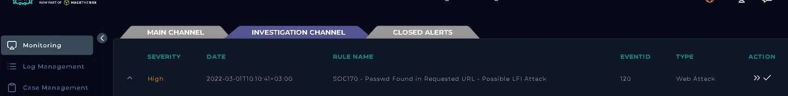
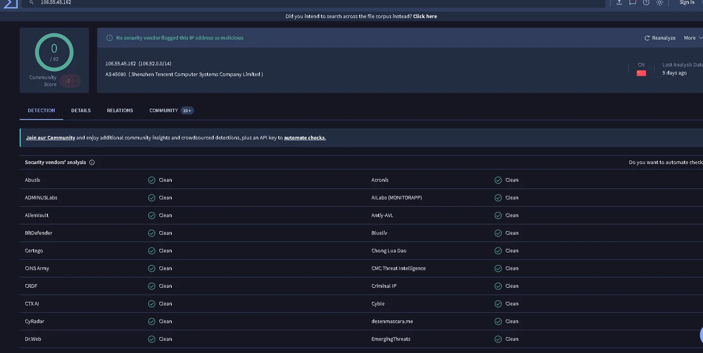
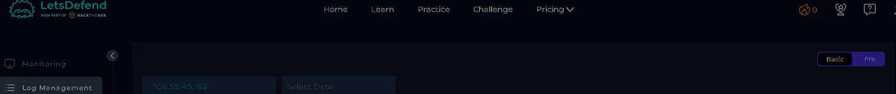
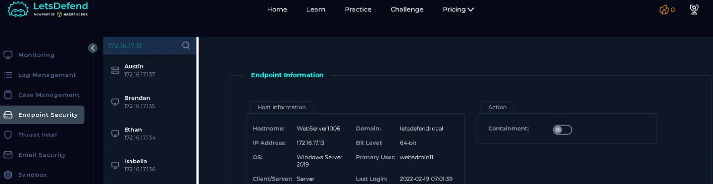
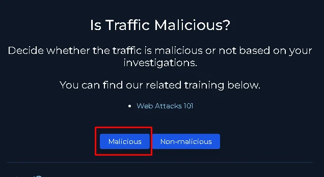
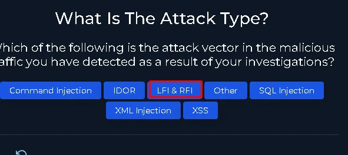
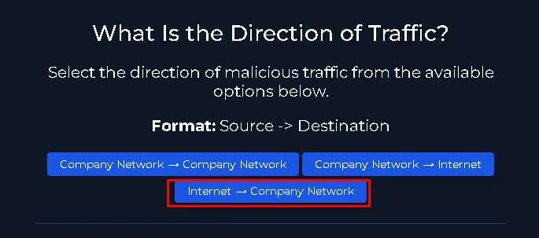
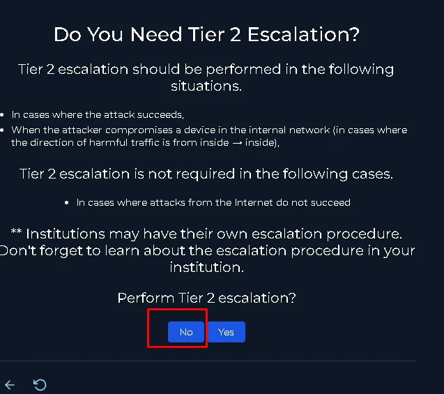
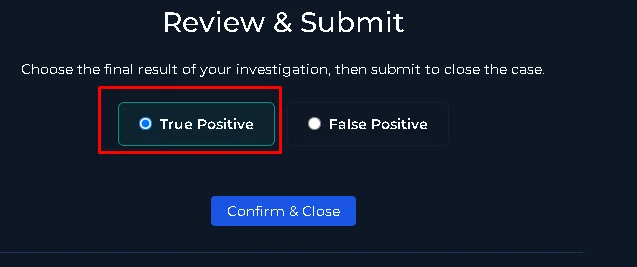

SOC170 · Possível inclusão local de arquivo (LFI)
- Categoria
- Ataques Web
- Caso
- SOC170
- Registro
- Comprometimento não confirmado
Resumo
Investigação de padrão de navegação de diretórios em uma requisição web.
IOCs
| Tipo | Valor | Observação |
|---|---|---|
| Payload | ../../../../etc/passwd | Path traversal para leitura de /etc/passwd. |
| IP | 106[.]55[.]45[.]162 | IP de origem; sem indicadores maliciosos no VirusTotal. |
Passo a passo da investigação
Registro e triagem
O ticket foi aberto para investigação.

A reputação do IP de origem foi consultada no VirusTotal. Na consulta realizada, não foram apresentados indicadores maliciosos.

Análise dos logs e do endpoint
O IP do servidor foi pesquisado no sistema de gerenciamento de logs. A análise mostrou uma resposta HTTP 500 (erro interno do servidor) para a requisição investigada.


No Endpoint Security, o IP 72.16.17.13 foi associado ao WebServer1006. A verificação realizada não identificou atividade suspeita no endpoint.
Evidências da requisição
O relatório registra um padrão de navegação de diretórios compatível com uma tentativa de acessar um arquivo de sistema do servidor.



As evidências consultadas mostram que a tentativa não obteve uma
resposta bem-sucedida; o status HTTP 500 indica erro no servidor. Esse
código, isoladamente, não confirma que a requisição foi bloqueada, mas
não há evidência apresentada de que o conteúdo de
/etc/passwd tenha sido acessado.

Conclusão
As informações disponíveis são compatíveis com uma tentativa de path traversal/LFI, sem evidência de acesso bem-sucedido ao arquivo solicitado ou de atividade suspeita no endpoint durante a análise. O IP de origem não apresentou indicadores maliciosos na consulta ao VirusTotal; a geolocalização atribuída a um país, por si só, não comprova intenção maliciosa.

Lições aprendidas
- HTTP 500 não prova bloqueio, mas junto de outros sinais indica que a leitura não teve sucesso.
- Reputação limpa do IP não descarta a tentativa.
Exercício simulado. Algumas capturas foram recortadas ou tiveram campos ocultados.